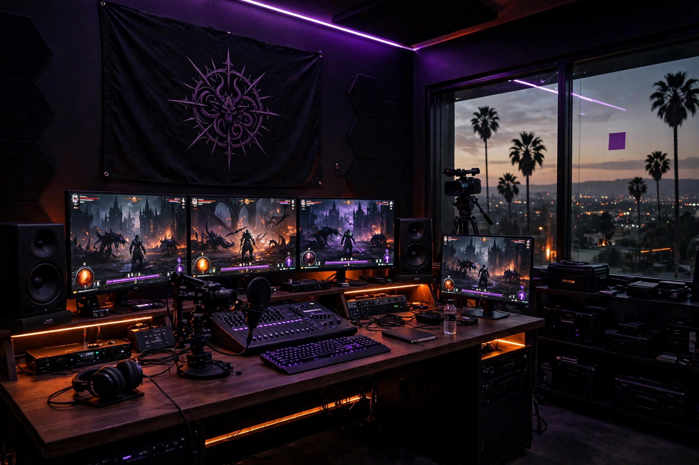

The Legend — Game
🏆 Taylor
- The clan's Path of Exile authority — builds, league mechanics, the calls that win weekends
- Shares the event, sanity-checks every plan
- First LFG. The standard the clan runs at
A concept for Taylor · From Jesse / NE3ULA
Lords of Chaos × Nova Labs — NE3ULA Studio, Southern California

The Legend — Game
Overlord of Music — Sound
⬇ both serve the same throne ⬇
The Clan
Players who never launch alone: one Discord, one hub, one soundtrack, every release.
You brought the event. The offer is a headquarters behind it: your game knowledge sets the standard, HQ gives it a sound, a stream, and a home — for this launch and every one after it.
Concept visual above is a rendering of the HQ vision — the real room is the NE3ULA studio in Southern California, sticky note and all (look for it on the window).